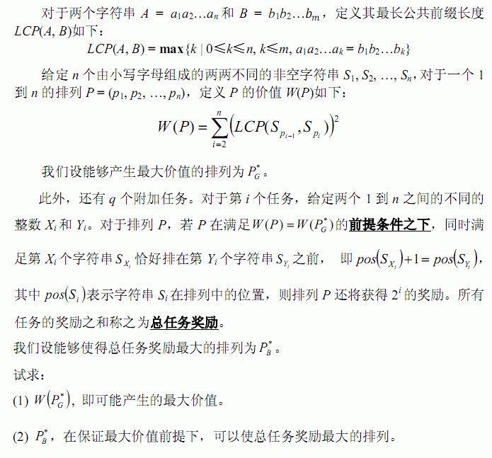

第一行包含两个整数 n和q，表示字符串和附加任务的数量，中 间用一个空格隔开。 接下来 n行，描述字符串，其中第 i 行包含一个字符串 Si。 接下来 q行，描述附加任务，其中第 i 行包含两个整数Xi和Yi，中间用一个 空格隔开。
输出是第一行最大价值 第二行成功的操作数量 第三行输出这些操作的标号 标号从1开始
10 1 baa bbcccccc babcba cdacbadd bbb daddbbd aa acddac bbdcbadb dbacacac 4 5
15 1 1